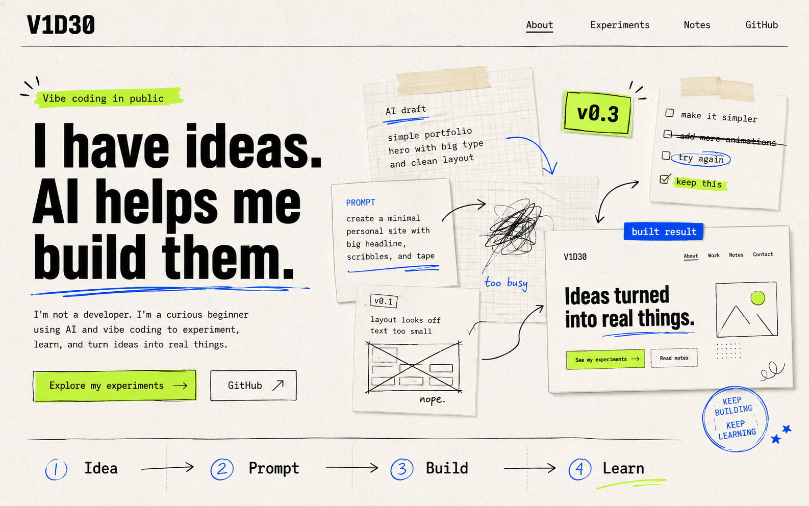

AI draft
Simple portfolio
hero with big type
and clean layout

Vibe coding in public
I'm not a developer. I'm a curious beginner using AI and vibe coding to experiment, learn, and turn ideas into real things.
✦ Ideas and direction by me. Technical assistance by AI.
Simple portfolio
hero with big type
and clean layout
create a minimal
personal site with
big headline,
scribbles, and tape
layout looks off
text too small
□ make it simpler
□ add more animations
□ try again
☑ keep this
important bit →
start with curiosity ↓
I'm V1D30. I have ideas, curiosity, and a willingness to try things — but I don't have a traditional coding background.
I use AI to help me understand the technical parts and turn ideas into working projects. I describe what I want, experiment with the results, fix what doesn't work, and learn as I go.
This is not a showcase of expert coding. It is an honest record of what an ordinary person can create when curiosity meets AI.
MY IDEAS + AI ASSISTANCE = REAL PROJECTS
My first home on the web. I shaped the idea and direction, then used AI to help write, understand, and improve the code.
A blank space for the next idea I decide to explore. I may not know how to build it yet — and that is exactly the point.
KEEP THE MESS
I'm keeping the attempts, wrong turns, useful prompts, and small wins — not only the finished result.
mistakes = useful data ↗
For a long time, having an idea and building it felt like two different worlds. AI gives me a bridge between them. I can describe what I'm imagining, test what it creates, ask questions when I'm stuck, and gradually shape the result into something that feels like mine.
NOT AN EXPERTFollow the experiment
Ideas will be tested. Mistakes will be made. Anything interesting will end up here.
Find me on GitHub ↗